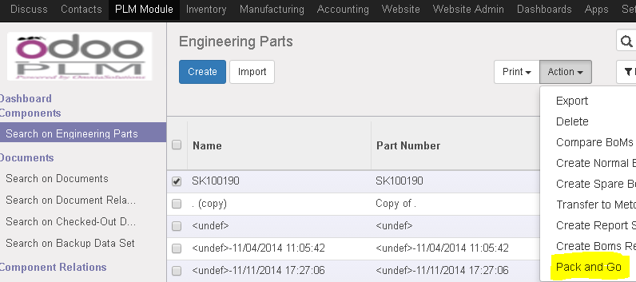
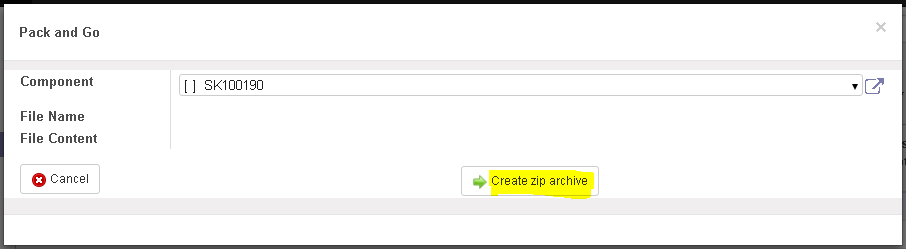

<section class="oe_container oe_dark">
    <div class="oe_row oe_spaced">
        <h2 class="oe_slogan">Plm Pack and Go</h2>
        <h3 class="oe_centeralign">Odoo version covered : 10.0</h3>
        <div class="oe_span12">
            <p class="oe_mt32">
				This module allows you to download a zip file containing all documents attached to a BOM.
            </p>
            <p class="oe_mt32">
            How it works:
            	<ul>
					<li>Go to Search on Engineering Parts and select a product</li>
					<br></br>
					<li>Go to the action Menu</li>
					<br></br>
					<li>
						</img>
					</li> 
					<br></br>
					<li>Click the <b>Create zip archive</b> button to the wizard</li>
					<br></br>
					<li>
						</img>
					</li>
					<br></br>
					<li>Click to the download zip file</li>
					<br></br>
					<li>
						</img>
					</li>
            	</ul>
            	<p>
            	Once you have the zip file in your machine .. unzip it and use it wherever you want.
            	</p>
            </p>
         </div>
    </div>
</section>